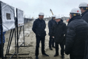
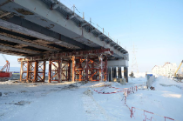
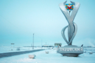

2-41-39")
Управление капитального строительства Тазовского района
Муниципальное казенное учреждение «Управление капитального строительства Тазовского района» создано в результате реорганизации в соответствии с постановлением Администрации Тазовского района от 29 июня 2011 года № 375, путем преобразования муниципального унитарного предприятия Управление капитального строительства Тазовского района.
Директор Управления - Глушков Алексей Викторович
Основные виды деятельности
  Деятельность в области технического регулирования, стандартизации, метрологии, аккредитации, каталогизации продукции
Деятельность в области гидрометеорологии и смежных с ней областях, мониторинга состояния окружающей среды, ее загрязнения
Деятельность в области архитектуры, инженерных изысканий и предоставление технических консультаций в этих областях
Консультирование по вопросам коммерческой деятельности и управления
Основные цели деятельности
Организация и контроль за ходом выполнения проектирования, строительства, реконструкции, капитального ремонта объектов муниципальной собственности Тазовского района и материально-технического оснащения зданий, помещений, сооружений, (далее - объекты муниципальной собственности); составление проектно-сметной документации.